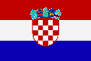

|
Länderinformationen Kroatien
1. Das Wichtigste auf einen Blick
Länderinformationen Kroatien
2. Sehens- und Hörenswertes
3. Politik & Gesellschaft
4. Schmeckenswertes
5. Medien
6. Reisetipps
1. Wissenswertes
1. Wissenswertes
|  | Hier
haben wir die wichtigsten Zahlen und Fakten zu Kroatien und der
kroatischen Sprache zusammengetragen. |
 Die
kroatische Sprache
Die
kroatische Sprache
Die
kroatische Sprache ist eine slawische Sprache. Sie gehört zur
Gruppe der indo-europäischen Sprachen, welche sich - wie alle
anderen slawischen Sprachen auch - aus dem Urslawischen entwickelte.
Kroatisch
ist die Amtssprache in Kroatien und eine der Amtssprachen in Bosnien
und Herzegowina. Ferner wird sie von Minderheiten in Serbien, Ungarn,
Österreich, der Slowakei, Italien und anderen Ländern, in
denen Angehörige der kroatischen Sprachgemeinschaft leben,
gesprochen. Sie ist somit die Muttersprache von über 5,5
Millonen Menschen.
Kroatisch
umschließt die Standardsprache und alle ihre Varianten, welche
von Kroaten gesprochen werden. In Kroatien gibt es viele regionale
Dialekte und abgesehen von diesen entwickelten sich drei
Schriftsprachen (Kajkavisch, Čakawisch und Štokawisch),
von denen jede einzelne ihre Eigenart besitzt.
Čakawisch
(sprich „tschakawisch“; gesprochen in Dalmatien und
Istrien) und Kajkavisch (gesprochen im nördlichen Kroatien)
werden nur von Kroaten genutzt, während Štokawisch auch
von Bosniaken, Serben und Montenegrinern gesprochen wird.
Die
ältesten kroatischen schriftlichen Funde stammen aus dem 11.
Jahrhundert Dieses frühe Spracherbe wurde mit der glagolitischen
Schrift geschrieben (Glagoliza). Viele Funde im Nordwesten Kroatiens
zeugen von der Bedeutung dieser besonderen Schrift.
Ab dem
12. Jahrhundert entwickelten die Kroaten eine besondere Form der
kyrillischen Schrift, die sogenannte kroatische oder westliche
kyrilische Schrift, (Bosančica oder Bosanica) und ab dem 14.
Jahrhundert wurden immer öfter die lateinischen Schriftzeichen
benutzt.
Die
wohl bedeutendste Entwicklung erlebte die kroatische Sprache in der
ersten Hälfte des 19.Jahrhunderts. Die Ideen des nationalen
Erwachens der europäischen Völker zu dieser Zeit breiteten
sich auch auf Kroatien aus. Im Rahmen dieser kultur-politischen
Bewegung wurde die Standardisierung der kroatischen Sprache stark
gefördert. Diese Bewegung (der sogenannte Illyrismus)
ermöglichte das Durchsetzen vieler wichtiger Änderungen in
der Sprache, obwohl die Standardisierung der heutigen Sprache schon
im 18. Jahrhundert begonnen hatte.
Die
kroatischen Anhänger dieser Bewegung zielten darauf ab eine
Vereinigung aller kroatischsprachigen Länder zu erreichen. Auf
diesem Weg wollte man sich von der damaligen ungarischen Herrschaft
und deren Bestrebung, die ungarische Sprache überall zu
verwenden, befreien.
Die
wichtigste Errungenschaft war es, die schtokawische Schriftsprache
als Standardsprache und die jekawische Aussprache zu übernehmen.
Diese wurde vom Großteil der Kroaten benutzt und die meisten
literarischen Werke wurden in der schtokawischen Sprache geschrieben.
Schon damals entstand das Fundament des heutigen Standardkroatisch.
In der
kroatischen Sprachgeschichte hatten politische und gesellschaftliche
Gründe sehr oft einen großen Einfluss auf Veränderungen
in der Sprache und erst die Unabhängigkeit der Republik Kroatien
im Jahre 1991 ermöglichte der kroatischen Sprache eine
natürliche Sprachentwicklung.
Im
Kroatischen werden einige Buchstaben und Laute verwendet, die in der
deutschen Sprache nicht vorkommen. Diese werden wir Ihnen in der
folgenden Tabelle kurz vorstellen:
|
Buchstabe/Laut
|
Beschreibung
der Aussprache
|
||
|
c
|
z: wie
in Zahn
|
||
|
č
|
tsch:
wie in Tschechien
|
||
|
ć
|
tch
oder tj: wie in Mädchen/Bettchen oder Tatjana
|
||
|
d¸
|
dsch:
wie in Dschungel
|
||
|
đ
|
d+j/sch:
wie im Italienischen gi/ge: Giovanni
|
||
|
lj
|
ähnlich
wie im Spanischen: Sevilla
|
||
|
nj
|
ähnlich
wie im Spanischen: niño
|
||
|
š
|
sch:
wie in schade
|
||
|
z
|
s: wie
in Hase
|
||
|
¸
|
stimmhaftes
weiches sch: wie in Genie, sich genieren, Journalist
|
 Einwohner
Einwohner
In
Kroatien leben rund 4,5 Menschen. Die durchschnittliche
Lebenserwartung der Männer liegt bei 72 Jahren und die der
Frauen bei 79 Jahren.
 Fläche
Fläche
Das
kroatische Staatsgebiet umfasst eine Fläche von 56.594 km²;
ist damit kleiner als Österreich, über sechs Mal kleiner
als Deutschland aber größer als die Schweiz.
 Währung
Währung
Die
Währung in Kroatien ist die Kuna. Die namentliche Herkunft der
Kuna stammt aus dem Mittelalter, als mit Marderfellen gehandelt
wurde. Dementsprechend ist es nicht verwunderlich, dass die Kuna
(dt.: Marder) das Symboltier Kroatiens ist. Auch auf dem kroatischen
Wappen findet man einen Marder.
 Wirtschaft
Wirtschaft
Die
Wirtschaft Kroatiens ist im Aufbruch. Es gibt zwar eine relativ hohe
Arbeitslosigkeit (17%), aber es wird aufgrund der
EU-Beitrittsbestrebungen ziemlich viel investiert, was das positive
Wirtschaftswachstum erklärt. Außerdem ist Kroatien
Mitglied des Zentraleuropäischen Freihandelsabkommens (CEFTA).
Dieser Zusammenschluss fördert und erleichtert den Handel in
Südosteuropa.
Die
Bedeutung der kroatischen Landwirtschaft ist nicht zu
vernachlässigen, da um die Hälfte der Landfläche
agrarisch genutzt wird. Im Save-Drau-Gebiet werden insbesondere
Kartoffeln, Weizen, Mais und Zuckerrüben kultiviert, während
in klimatisch begünstigten Bereichen des Landes Kulturen wie
Wein und Obst angebaut werden. Es werden Schafe, Rinder und Schweine
gezüchtet. Außerdem stellt die Fischzucht in Dalmatien
eine wichtige Einnahmequelle dar.
Kroatien
ist ein Land, das über viele Bodenschätze verfügt. Die
wichtigsten Rohstoffe sind: Steinkohle, Braunkohle, Erdgas, Erdöl,
Bauxit, Eisenerz und Porzellanerde. Die Bergbauindustrie galt bis
Beginn des Krieges 1999 als einer der bedeutendsten Arbeitgeber. Die
weiteren wichtigsten Industrieunternehmen sind: Erdölraffinerien,
Eisen-und Stahlwerke, Schiffswerften, Chemieunternehmen, die
Nahrungsmittelindustrie, Maschinenbau, Zement- und Betonwerke und die
Textilindustrie. Während des Krieges (1991-1995) erlebten viele
Industriebereiche massive Einbrüche, jedoch sind schon seit
einigen Jahren wieder in den meisten Branchen positive
Produktivitätsraten zu notieren.
In
diesem kurzen Überblick zur wirtschaftlichen Situation in
Kroatien darf der Tourismus natürlich nicht fehlen. Über
zehn Millionen Touristen besuchen Kroatien jedes Jahr. Der
Fremdenverkehr zählt zu einem der wichtigsten Wirtschaftszweige,
da in dieser Branche etwa ein Fünftel des Bruttoinlandsproduktes
erwirtschaftet wird.
Zeitzone
Kroatien
liegt in der gleichen Zeitzone wie Österreich, Deutschland und
die Schweiz. Ebenso wird in Kroatien im Frühling auf Sommerzeit
umgestellt. Es ist somit in Zagreb in diesem Moment gleich spät
wie bei Ihnen zu Hause.
Im
nächsten Kapitel finden Sie einige interessante Empfehlungen zu
Urlaubszielen, Kultur und vielem anderen mehr.
| Wissenswertes |